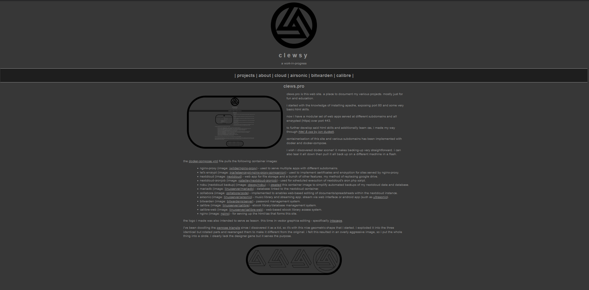

clews.pro

Clews.pro is this web site. A place to document my various projects. Mostly just for fun and education.
I started with the knowledge of installing apache, exposing port 80 and some very basic HTML skills.
Now I have a modular set of web apps served at different subdomains and all encrypted (https) over port 443.
To further develop said HTML skills and additionally learn CSS, I made my way through HTML & CSS by Jon Duckett.
Containerisation of this site and various subdomains has been implemented with docker and docker-compose.
I wish I discovered Docker sooner! It makes backing-up very straightforward. I can also tear it all down then pull it all back up on a different machine in a flash.
The docker-compose.yml file pulls the following container images:
- NGINX-Proxy (image: jwilder/nginx-proxy) - Used to serve multiple apps with different subdomains.
- Let's Encrypt (image: jrcs/letsencrypt-nginx-proxy-companion) - Used to implement certificates and encryption for sites served by NGINX-Proxy.
- Nextcloud (image: nextcloud) - Web app for file storage and a bunch of other features. My method of replacing google drive.
- Nextcloud-Cronjob (image: rcdailey/nextcloud-cronjob) - Used for scheduled execution of Nextcloud's cron.php script.
- NCBU (Nextcloud Backup) (image: clewsy/ncbu) - I created this container image to simplify automated backups of my nextcloud data and database.
- MariaDB (image: linuxserver/mariadb) - Database linked to the Nextcloud container.
- Collabora (image: collabora/code) - Implemented to enables web-based editing of documents/spreadsheets within the Nextcloud instance.
- AirSonic (image: linuxserver/airsonic) - Music library and streaming app. Stream via web interface or android app (such as UltraSonic).
- BitWarden (image: bitwardenrs/server) - Password management system.
- Calibre (image: linuxserver/calibre) - Ebook library/database management system.
- Calibre-Web (image: linuxserver/calibre-web) - Web-based ebook library access system.
- NGINX (image: nginx) - For serving up the html/css that forms this site.
The logo I made was also intended to serve as lesson. This time in vector graphics editing - specifically Inkscape.
I've been doodling the Penrose triangle since I discovered it as a kid, so it's with this nice geometric shape that I started. I exploded it into the three identical but rotated parts and rearranged them to make it different from the original. I felt this resulted in an overly aggressive image, so I put the whole thing into a circle. I clearly lack the designer gene but it serves the purpose.
{kind=link}
{kind=link}